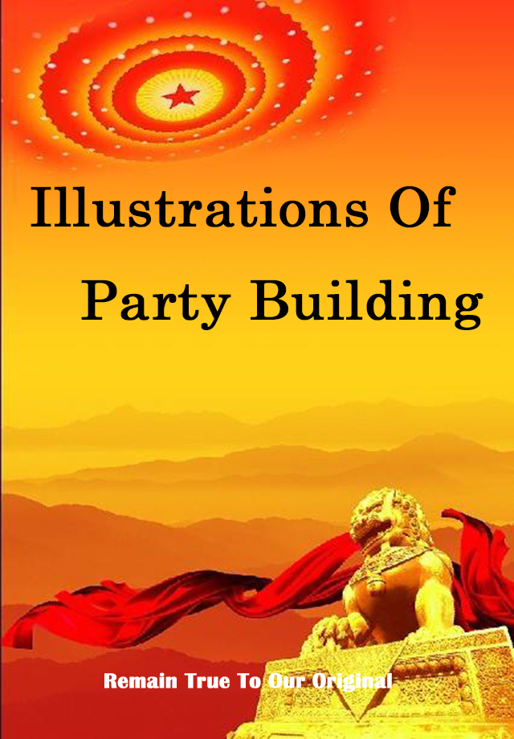
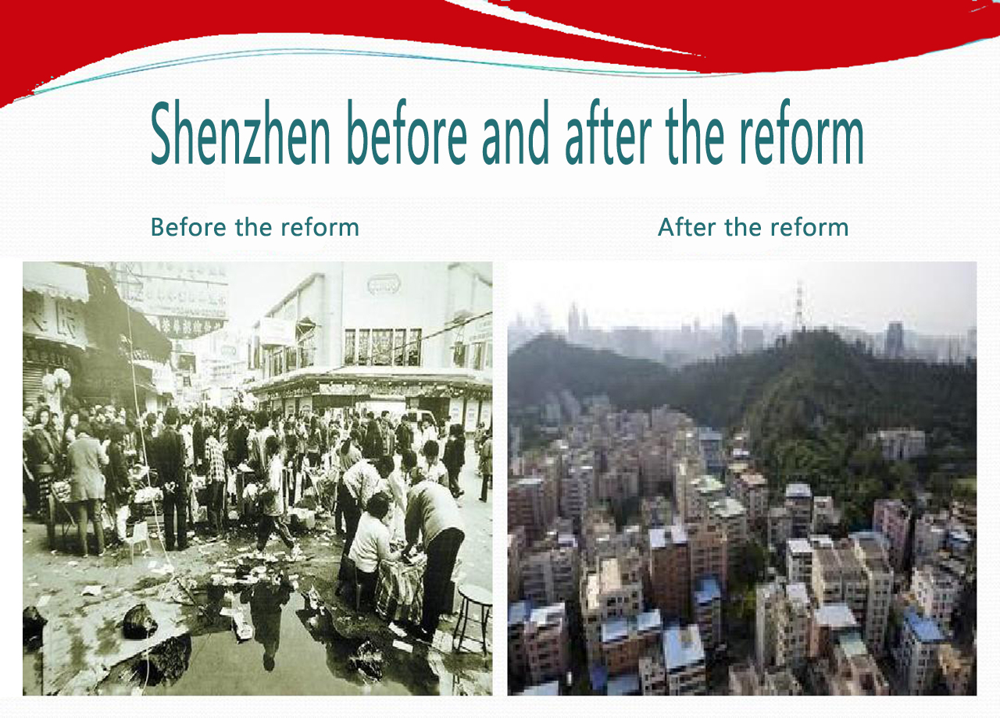

The third plenary session of the 11th CPC central committee means that China has entered a new historical period of reform and opening-up and socialist modernization, and the CPC has started its new exploration of building socialism with Chinese characteristics. Forty years of exploration, all the way wind and rain, all the way brilliant.
After 40 years of exploration, socialism with Chinese characteristics is the only way to realize the great rejuvenation of the Chinese nation. History has shown us that without the leadership of the communist party of China, there would be no success of socialism with Chinese characteristics, no happiness and prosperity of the Chinese people, and no great rejuvenation of the Chinese nation. Therefore must constantly sum up history, learn, and constantly strengthen and improve the party's construction, promote the party's ruling ability construction, thought construction, organization construction, style construction and anti-corruption construction, system construction, improve the party's ruling ability, improve the ability of combating, build a strong, strong heart is the party of the people.
The historical course of the party in the past 40 years since reform and opening up
- Leading the cause of socialism in China
- Shenzhen before and after the reform
- The defense and development of socialism with Chinese characteristics
- We will complete the building of a moderately prosperous society in all respects and accelerate socialist modernization
- Socialism with Chinese characteristics has entered a new era and made every effort to realize the great rejuvenation of the Chinese nation
Reform and opening-up have yielded fruitful results over the past 40 years
40 years of reform and opening up of party building valuable experience
- Hold high the great banner of socialism with Chinese characteristics and advance the party's political construction in an all-round way
- Build a high - quality team of grassroots organizations, do well in organizational construction
- We should adhere to the principle of strict party discipline and establish and improve the party's style of work
Since the new century, the 16th national congress of the CPC has held high the great banner of deng xiaoping theory, comprehensively implemented the important thought of "three represents", built a moderately prosperous society in all respects, accelerated socialist modernization, strived to create a new situation in the cause of socialism with Chinese characteristics, and established the important thought of "three represents" as the party's guiding ideology.
Socialism with Chinese characteristics has entered a new era and made every effort to realize the great rejuvenation of the Chinese nationSince the 18th to xi jinping, general secretary of the Chinese communists as the main representative, unity, led the Chinese people of all ethnic groups as a whole to promote economic, political, cultural, social, and ecological civilization construction of "five one", coordinate to build a well-off society in an all-round way, comprehensively deepen reform and the rule of law, the overall governing party "comprehensive" four strategic layout, resolute, anti-corruption is the wind's age to punish evil, created a new situation in party and national undertaking development.
Reform and opening-up have yielded fruitful results over the past 40 years
1.Material economy guarantees lifeAfter 40 years of reform and opening up, the Chinese people's life has undergone a leapfrog transformation from lack of food and clothing to food and clothing and then to overall prosperity.
With the continuous improvement of the national social security system, from the urban-rural integrated endowment insurance system to the basic medical security system for urban workers and the new rural cooperative medical system, it is possible to provide "old-age support" and "everyone has access to basic medical services". Let broad masses of people to reduce diseases, pension and other issues of concern.
2.Spiritual civilization constructionIn an age when food and clothing are unsolvable, it is difficult for people to have the energy to carry out leisure activities and lack of spiritual culture. After 40 years of hard work, people's spiritual civilization is enriched while their material life is constantly satisfied. With the continuous improvement of the socialist core value system, the people's ideological concept and mental outlook have also undergone a qualitative change.
THE END
- 
-

- 
-

-

-

-

-